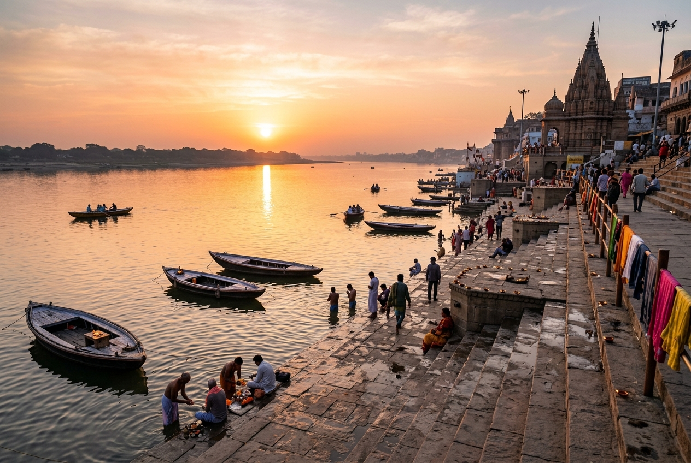
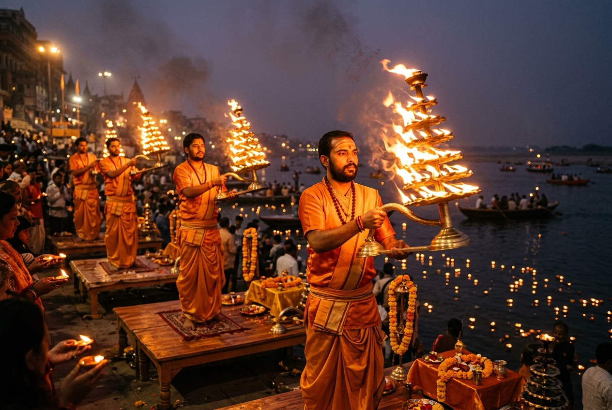
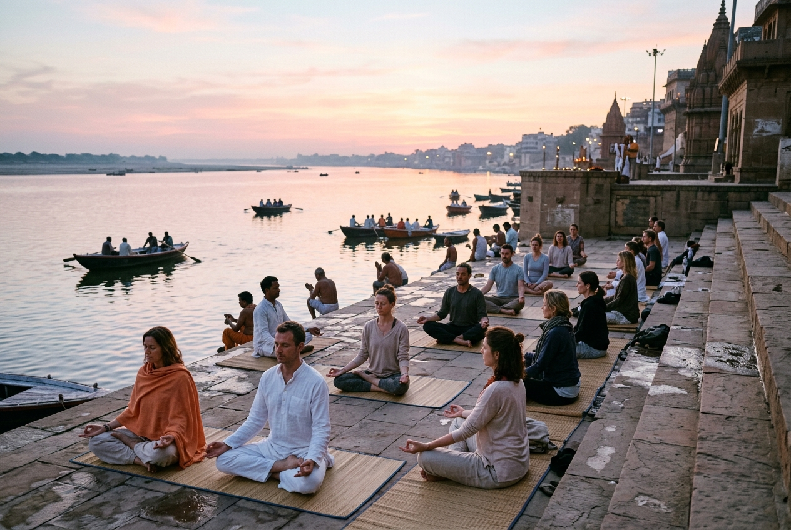

Assi Ghat
Gateway to the Southern Ghats of Kashi
Nestled at the southern confluence of the sacred Ganga and Assi rivers in Varanasi, Assi Ghat stands as one of the city's most vibrant and culturally rich riverfronts. Revered by pilgrims for centuries, it is a bustling hub of spiritual practices, artistic traditions, and morning devotions.
🌊 The Assi-Ganga Confluence & Origin
Meaning & Origin of the Name
Assi Ghat marks the sacred spot where the Assi River (a minor stream) meets the holy Ganga. According to the ancient Agni Purana and Matsya Purana, Varanasi is defined as the sacred land bounded by the Varuna River to the north and the Assi River to the south, giving Kashi its name "Varanasi".
The Legend of Goddess Durga
Hindu mythology connects the ghat's origin to Goddess Durga. After defeating the demon lords Shumbha and Nishumbha, the Goddess threw her sword (asi) onto the ground. Where the sword struck, a stream sprang forth, which came to be known as the Assi River. Thus, bathing here is believed to invoke the protective blessings of Durga.
Geographic Significance
As the southernmost ghat in the major sequence of Varanasi's 84 ghats, Assi Ghat serves as a starting point for the famous Panchatirthi Yatra (pilgrimage of five sacred spots). Its wide steps provide easy access to the river's calm, southern currents.
🕉️ Religious Significance & Traditional Importance
Asisangameshwar Temple
Under a sacred peepal tree at the ghat lies the ancient Asisangameshwar Lingam (Lord of the Confluence of Assi). Mentioned in the Kashi Khanda of the Skanda Purana, paying respects here is a core ritual for pilgrims visiting Kashi.
Bathing Rituals & Salvation
Taking a ritual holy dip (Snan) at the Assi-Ganga confluence is believed to cleanse one's sins. Bathing here during the Hindu months of Chaitra and Kartika is considered highly auspicious, offering blessings equivalent to thousands of ashvamedha sacrifices.
The Pilgrimage Gateway
Pilgrims historically began their circumambulation of Kashi from Assi Ghat, visiting the five holy tirthas along the riverbank in sequence: Assi, Dashashwamedh, Adi Keshava, Panchganga, and Manikarnika.
🌅 Subah-e-Banaras (Morning at Assi)
At the crack of dawn, Assi Ghat transforms into the stage for Subah-e-Banaras—a cultural initiative showcasing the timeless heritage of Kashi. The morning starts with Vedic chanting by young scholars, followed by a sunrise Aarti. Devotees and visitors then join a collective morning yoga session, concluded by a live Indian classical music recital (Ragas) performed by local masters as the sun rises over the horizon.
🪔 Morning & Evening Ganga Aarti
While Varanasi is famous for the grand evening Aarti downstream, Assi Ghat offers a unique double experience. It hosts both a serene sunrise Aarti as part of Subah-e-Banaras and a highly spiritual evening Ganga Aarti. Young priests perform rhythmic devotional lamp ceremonies on wooden platforms, waving multi-tiered brass oil lamps in unison to the accompaniment of Vedic hymns, conch shells, and bells.
✍️ Cultural Life & Literary Connection
- Saint Tulsidas: The 16th-century saint and poet lived and composed the famous epic Ramcharitmanas (the Hindi version of Ramayana) right next to this ghat. The historic Tulsidas Akhara and temple stand nearby.
- Academic Proximity: Located near the southern tip of the city, Assi Ghat is a popular gathering spot for students, writers, and scholars from the prestigious Banaras Hindu University (BHU).
- Vibrant Cafe Culture: Over the years, the area surrounding the ghat has blossomed into a multicultural zone, mixing traditional Sanskrit schools with modern international cafes and bookshops.
🛶 Boat-Ride & Sunrise Experience
- Sunrise over Ganga: Due to its unique geography, Assi Ghat offers an unobstructed view of the sun rising directly across the river, painting the water in gold.
- Rowboat Journeys: Wooden rowboats and hand-paddled boats are anchored here. Hiring a boat at dawn allows you to glide silently past the other historic ghats of Varanasi.
- Spiritual Serenity: A boat trip from Assi Ghat to Dashashwamedh Ghat in the early morning lets travelers observe pilgrims performing their ablutions, meditation, and prayers from the river.
💡 Interesting Facts About Assi Ghat
- Mentioned in Epics: References to Assi Ghat can be found in ancient scriptures like the Padma Purana and Kurma Purana.
- Tulsidas Akhara: A traditional Indian wrestling school (Akhara) established by Saint Tulsidas still functions near the ghat, preserving traditional mud-wrestling practices.
- Spiritual Start: It is the first ghat you meet when traveling from the southern highway, making it Kashi's southern gateway.
- Eco-Friendly Initiatives: Regular cleanliness drives and conservation programs protect the delicate confluence of the Assi stream and the Ganga.
- Varanasi's Canvas: Many local artists use the walls around Assi Ghat to paint murals depicting Indian mythology, ragas, and historical saints.
- Subah-e-Banaras Yoga: The open-air morning yoga session is free and open to everyone, attracting hundreds of participants daily from around the globe.
Visual Heritage Gallery

Assi Ghat at Sunrise
Golden light of the dawn sun reflecting off the calm waters of the Ganga River.

The Ganga Aarti
Priests offering multi-tiered flaming brass lamps during the spiritual ceremony.

Morning Yoga & Meditation
A peaceful open-air yoga session held on the steps during Subah-e-Banaras.

Traditional Wooden Boats
Rowboats anchored along the steps, ready for sunrise river journeys.